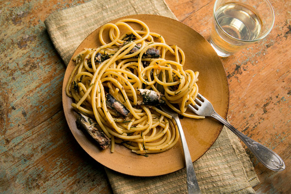

Sardine Pasta

Description
I once bought sardines instead of anchovies by accident and then needed to find a recipe for them. Found this one. Simple but good.
Ingredients
- 200g linguine
- 1 can of sardines packed in olive oil
- 1 red onion, thinly sliced
- 1 tablespoon of capers in brine
- 1 clove garlic, minced
- 1 tablespoon lemon juice
- salt and pepper to taste
Steps
- Fill a large pot with salted water and set it to boil for the pasta.
- Add the pasta to the boiling water.
- In a frying pan over medium heat, sauté the onions for 5-10 minutes using some of the olive oil from the sardines.
- Add the garlic to the pan and cook for another 2 minutes.
- Add the sardines and capers to the pan.
- Check to see if the pasta is ready. When it is, add the lemon juice to the pan, then drain the pasta and add it to the pan, stiring at low heat for one minute.
Back to the recipe list.